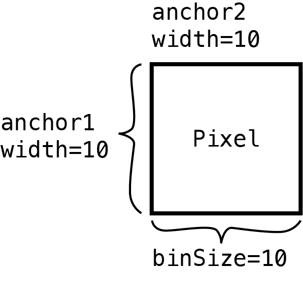
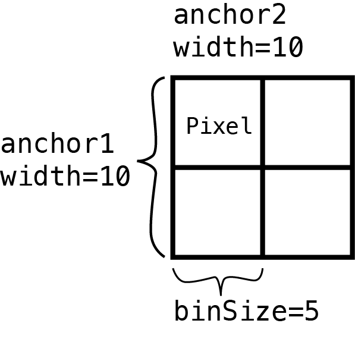
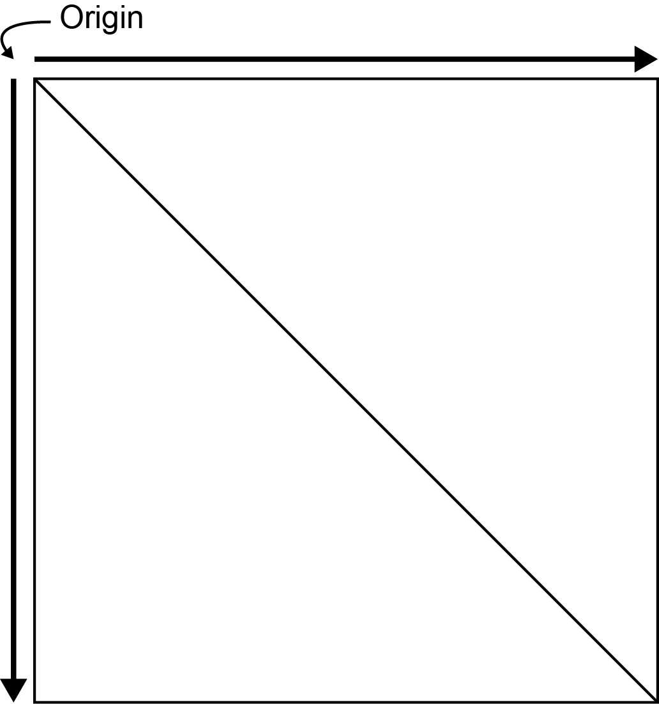
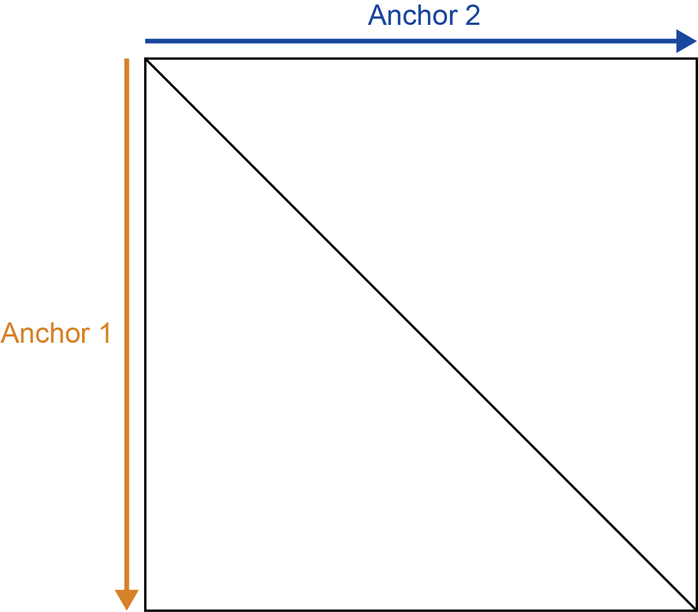
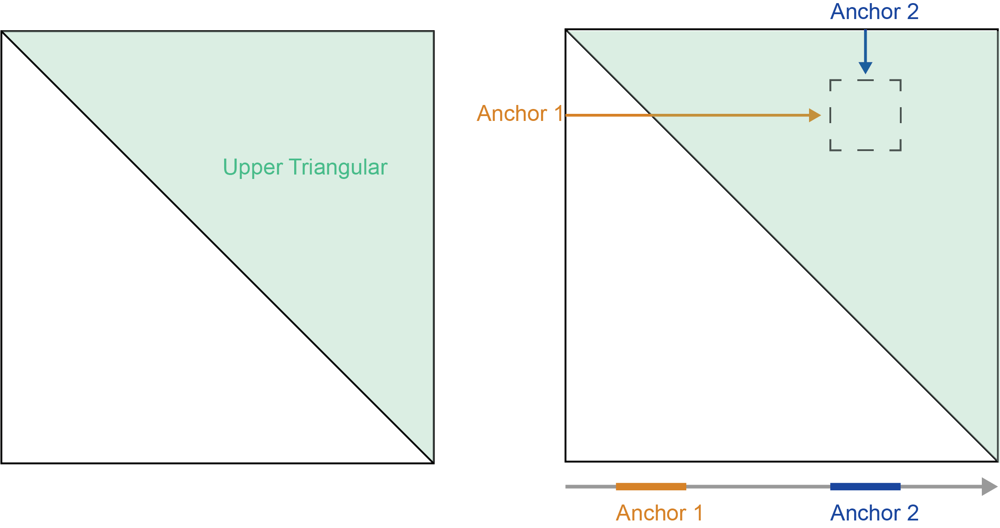
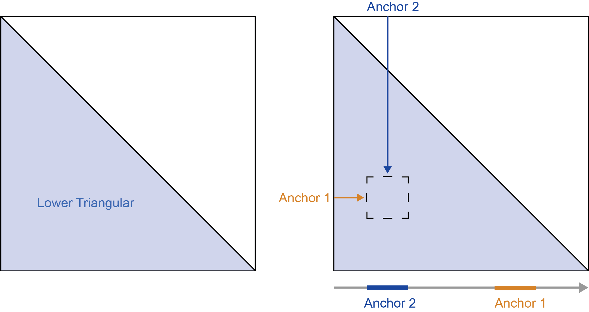
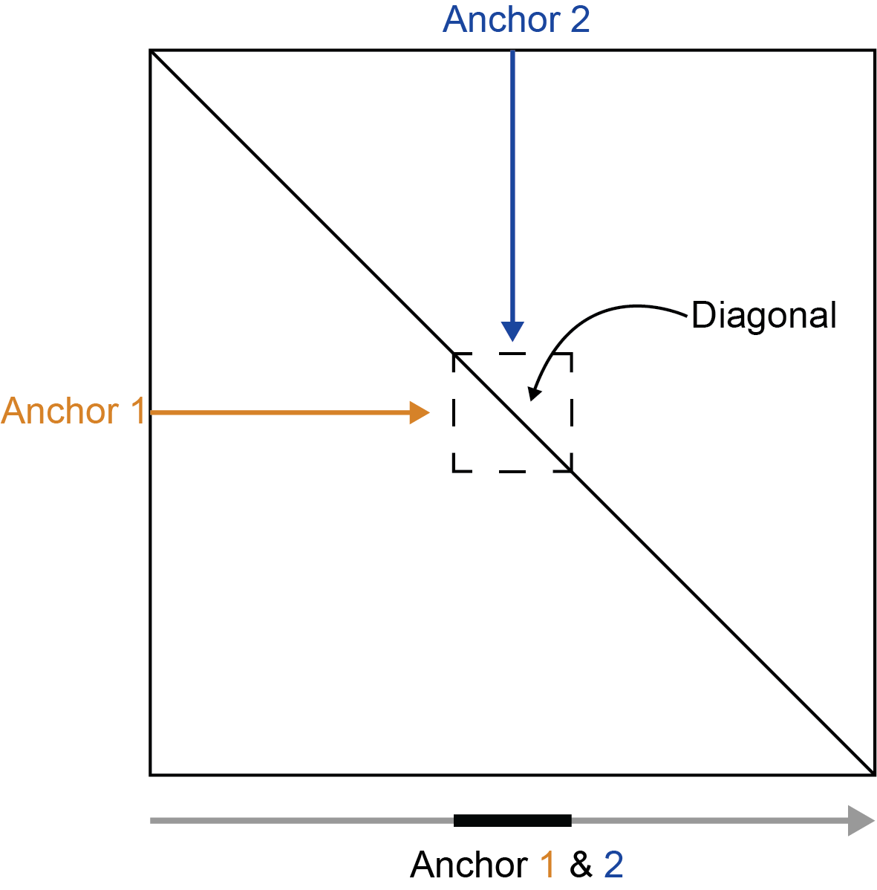
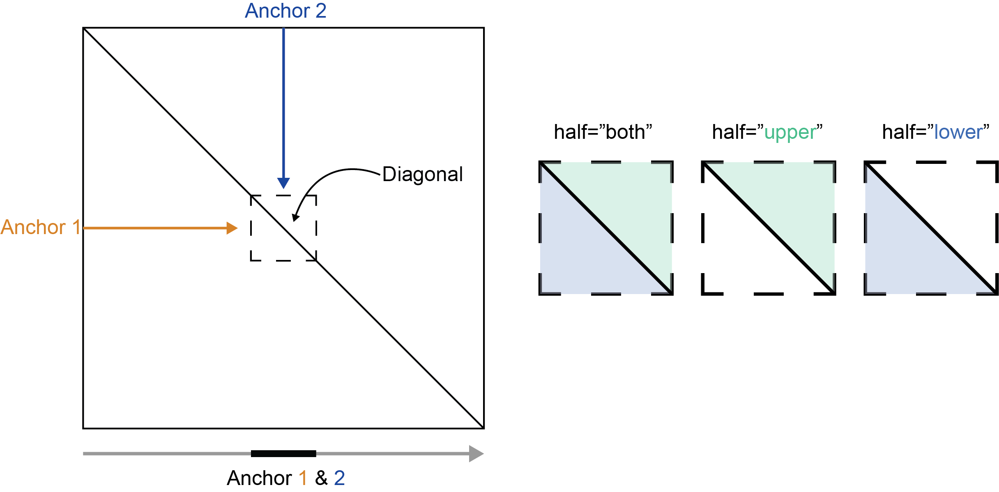

Pulling Hi-C data with mariner
Eric Davis
2025-08-05
Source:vignettes/articles/pull_hic.Rmd
pull_hic.Rmdmariner offers 2 functions for extracting/pulling
interactions from .hic files - pullHicPixels()
and pullHicMatrices(). In this article, you will learn how
to extract Hi-C pixels or count matrices and access them from the
resulting objects.
pullHicPixels() and pullHicMatrices()
accept the same set of arguments, but return different outputs. Which
function you choose depends on whether you want to extract a single
value for each interaction or a matrix of values between a range of
interactions.
When to use pullHicPixels()
If you want a single value for each interaction and .hic
file then you should use the pullHicPixels() function. We
define a “pixel” as an interaction where both anchors are the same
width. The binSize argument is used here to check that your
desired pixel resolution matches your input interactions.

Note
You can check your .hic file to see which resolutions
are available for the binSize argument with the
strawr::readHicBpResolutions(). See the
assignToBins() to set your interactions to an acceptable
resolution.
The following example pulls 100-Kb pixels from two .hic
files:
## Load mariner
library(mariner)
## Use example .hic files from ExperimentHub
hicFiles <- c(
marinerData::LEUK_HEK_PJA27_inter_30.hic(),
marinerData::LEUK_HEK_PJA30_inter_30.hic()
)
names(hicFiles) <- c("hic1", "hic2")
## Make some example interactions
gi <- read.table(
text="
1 51000000 51100000 1 51000000 51100000
1 150000000 150100000 1 150000000 150100000
2 51000000 51100000 2 51000000 51100000
2 150000000 150100000 2 150000000 150100000
"
)
gi <- as_ginteractions(gi)
## Pull Hi-C pixels
pixels <- pullHicPixels(x=gi, files=hicFiles, binSize=100e3)
pixels## class: InteractionMatrix
## dim: count matrix with 4 interactions and 2 file(s)
## metadata(3): binSize norm matrix
## assays(1): counts
## rownames: NULL
## rowData names(0):
## colnames(2): hic1 hic2
## colData names(2): files fileNames
## type: GInteractions
## regions: 4This results in an InteractionMatrix object which
contains the extracted Hi-C data, interactions, and metadata for the
interactions and .hic files.
The extracted Hi-C data is stored as a count matrix where every row
is an interaction (i.e pixel) and each column is a .hic
file. Use the counts() function to access the count matrix
from an InteractionMatrix object.
counts(pixels)## <4 x 2> DelayedMatrix object of type "double":
## hic1 hic2
## [1,] 53 49
## [2,] 63 56
## [3,] 36 16
## [4,] 43 24This count matrix is stored on-disk (if onDisk=TRUE) as
an HDF5-backed DelayedArray object. The data is stored in
the provided file path to the h5File argument. If a file
path isn’t provided, a temporary file is created in the current
Rsession. To access or update the location of the HDF5 file after using
the pullHicPixels() function, use the path()
function.
path(pixels)## [1] "/tmp/RtmpdicOqR/file20c24cd87207.h5"Note
Using a DelayedArray instead of a normal R matrix has a
number of benefits, especially for users working with limited computer
memory. See the ?DelayedArray package documentation and
vignettes for more information.
The count matrix can then be used for downstream analysis such as
differential interaction analysis with DESeq2. To learn
more about how to access components of InteractionMatrix
objects, see the InteractionMatrix
class section below.
When to use pullHicMatrices()
If you want a matrix of values for each interaction then you should
use the pullHicMatrices() function. These matrices are made
up of multiple “pixels”, defined by dividing the range of each
interaction by the supplied binSize parameter.

Square matrices
For example, if you define 500x500 Kb interactions by setting the width of both anchors to be 500 Kb
## Create 500x500 Kb regions
regions <- assignToBins(x=gi, binSize=500e3, pos1="start", pos2="start")Then set the binSize to 100 Kb
## Pull Hi-C matrices
matrices <- pullHicMatrices(x=regions, files=hicFiles, binSize=100e3)
matrices## class: InteractionArray
## dim: 4 interaction(s), 2 file(s), 5x5 count matrix(es)
## metadata(3): binSize norm matrix
## assays(3): counts rownames colnames
## rownames: NULL
## rowData names(0):
## colnames(2): hic1 hic2
## colData names(2): files fileNames
## type: GInteractions
## regions: 4It produces count matrices each with 5 rows and 5 columns. These
count matrices are stored in the InteractionArray class and
are accessible with the counts() function.
counts(matrices)## <5 x 5 x 4 x 2> DelayedArray object of type "double":
## ,,1,hic1
## [,1] [,2] [,3] [,4] [,5]
## [1,] 53 15 5 1 4
## [2,] 15 68 19 8 5
## [3,] 5 19 69 12 2
## [4,] 1 8 12 48 13
## [5,] 4 5 2 13 48
##
## ...
##
## ,,4,hic2
## [,1] [,2] [,3] [,4] [,5]
## [1,] 24 11 3 7 4
## [2,] 11 26 2 6 5
## [3,] 3 2 41 17 4
## [4,] 7 6 17 42 14
## [5,] 4 5 4 14 44You can supply showDimnames=TRUE to display the start
bin of each anchor.
counts(matrices, showDimnames=TRUE)## <5 x 5 x 4 x 2> DelayedArray object of type "double":
## ,,1,hic1
## 51000000 51100000 51200000 51300000 51400000
## 51000000 53 15 5 1 4
## 51100000 15 68 19 8 5
## 51200000 5 19 69 12 2
## 51300000 1 8 12 48 13
## 51400000 4 5 2 13 48
##
## ...
##
## ,,4,hic2
## 150000000 150100000 150200000 150300000 150400000
## 150000000 24 11 3 7 4
## 150100000 11 26 2 6 5
## 150200000 3 2 41 17 4
## 150300000 7 6 17 42 14
## 150400000 4 5 4 14 44These 4-dimensional arrays use the first and second dimensions as the
rows and columns of the count matrices, the third dimension for each
interaction, and the fourth dimension for each .hic
file.
If you want to convert pixels to square Hi-C regions, you can use the
pixelsToMatrices() function. The buffer
argument describes how many pixels to expand the ranges on either side
of the center pixel. For example, to expand 100x100 Kb pixels to regions
that are 500x500 Kb, specify buffer=2 to add two additional
100 Kb pixels on both sides of the central 100 Kb pixels.
regions <- pixelsToMatrices(x=gi, buffer=2)
IRanges::width(regions)## $first
## [1] 500001 500001 500001 500001
##
## $second
## [1] 500001 500001 500001 500001When pulled with pullHicMatrices() using
binSize=100e3 odd, 5x5 matrices result.
pullHicMatrices(x=regions, files=hicFiles, binSize=100e3)## class: InteractionArray
## dim: 4 interaction(s), 2 file(s), 5x5 count matrix(es)
## metadata(3): binSize norm matrix
## assays(3): counts rownames colnames
## rownames: NULL
## rowData names(0):
## colnames(2): hic1 hic2
## colData names(2): files fileNames
## type: GInteractions
## regions: 4Rectangular matrices
The previous example returns square count matrices where the width of
both anchors are the same for each interaction. mariner
also supports rectangular count matrices where the widths of the rows
and columns are not equal.
For example, you can define 300x600 Kb interactions by setting the width of the first anchor to be 300 Kb and the second anchor to be 600 Kb.
## Create 300x600 Kb regions
regions <- assignToBins(
x=gi,
binSize=c(300e3, 600e3),
pos1="start",
pos2="start"
)Then set the binSize to 100 Kb
## Pull Hi-C matrices
matrices <- pullHicMatrices(x=regions, files=hicFiles, binSize=100e3)
matrices## class: InteractionArray
## dim: 4 interaction(s), 2 file(s), 3x6 count matrix(es)
## metadata(3): binSize norm matrix
## assays(3): counts rownames colnames
## rownames: NULL
## rowData names(0):
## colnames(2): hic1 hic2
## colData names(2): files fileNames
## type: GInteractions
## regions: 8Which produces an InteractionArray object with count
matrices each with 3 rows and 6 columns.
counts(matrices, showDimnames=TRUE)## <3 x 6 x 4 x 2> DelayedArray object of type "double":
## ,,1,hic1
## 51000000 51100000 51200000 51300000 51400000 51500000
## 51000000 53 15 5 1 4 1
## 51100000 15 68 19 8 5 5
## 51200000 5 19 69 12 2 2
##
## ...
##
## ,,4,hic2
## 150000000 150100000 150200000 150300000 150400000 150500000
## 150000000 24 11 3 7 4 1
## 150100000 11 26 2 6 5 0
## 150200000 3 2 41 17 4 9Extracting square and rectangular matrices of data results in
InteractionArray objects. See InteractionArray class
to learn more about accessing data from these objects.
Variable matrices
mariner also supports extracting count matrices that are
different dimensions for each interaction.
For example, these three interactions have dimensions of 1x3, 3x3,
and 3x2 after pulling matrices with a binSize of 100e3:
## Interactions of different dimensions
regions <- read.table(
text="
1 51000000 51100000 1 51000000 51300000
1 150000000 150300000 1 150000000 150300000
2 51000000 51300000 2 51000000 51200000
"
)
regions <- as_ginteractions(regions)
## Pull Hi-C matrices
matrices <- pullHicMatrices(x=regions, files=hicFiles, binSize=100e3)
matrices## class: InteractionJaggedArray
## dim: 3 interaction(s), 2 file(s), variable count matrix(es)
## metadata(3): binSize, norm, matrix
## colData: hic1, hic2
## colData names(2): files, fileNames
## HDF5: /tmp/RtmpdicOqR/file20c230d0ce3.h5The resulting object is of class InteractionJaggedArray.
The class is different than the previous examples because the classes
that InteractionArray inherits from are designed for
regular, rectangular data types. A custom class called
JaggedArray is used to hold irregular, or jagged, arrays of
data.
The same counts() function returns these
JaggedArray objects containing the Hi-C count data for each
interaction and .hic file.
counts(matrices)## <n x m x 3 x 2> JaggedArray:
## ,,1,1
## <1 x 3> matrix
## [,1] [,2] [,3]
## [1,] 53 15 5
##
## ...
##
## ,,3,2
## <3 x 2> matrix
## [,1] [,2]
## [1,] 16 6
## [2,] 6 17
## [3,] 3 7See the InteractionJaggedArray
class section to learn more about accessing and transforming data
from InteractionJaggedArray and JaggedArray
objects.
InteractionMatrix class
The InteractionMatrix class extends the
InteractionSet and SummarizedExperiment
classes. Therefore, it also inherits the accessors and methods of these
objects. For example, you can access the original interactions, metadata
about the experiment, row or column metadata, and subset or index slices
of these objects. The following sections highlight some of the most
useful accessors and methods for InteractionMatrix using
this example object:
## Load mariner
library(mariner)
## Use example .hic files from ExperimentHub
hicFiles <- c(
marinerData::LEUK_HEK_PJA27_inter_30.hic(),
marinerData::LEUK_HEK_PJA30_inter_30.hic()
)
names(hicFiles) <- c("hic1", "hic2")
## Make some example interactions
gi <- read.table(
text="
1 51000000 51100000 1 51000000 51100000
1 150000000 150100000 1 150000000 150100000
2 51000000 51100000 2 51000000 51100000
2 150000000 150100000 2 150000000 150100000
"
)
gi <- as_ginteractions(gi)
## InteractionMatrix
imat <- pullHicPixels(x=gi, files=hicFiles, binSize=100e3)Common accessors
## Show method
imat## class: InteractionMatrix
## dim: count matrix with 4 interactions and 2 file(s)
## metadata(3): binSize norm matrix
## assays(1): counts
## rownames: NULL
## rowData names(0):
## colnames(2): hic1 hic2
## colData names(2): files fileNames
## type: GInteractions
## regions: 4
## Dimensions
dim(imat)## [1] 4 2
## Metadata about Hi-C extraction
metadata(imat)## $binSize
## [1] 1e+05
##
## $norm
## [1] "NONE"
##
## $matrix
## [1] "observed"
## Metadata about interactions
SummarizedExperiment::rowData(imat)## DataFrame with 4 rows and 0 columns
## Metadata about columns
SummarizedExperiment::colData(imat)## DataFrame with 2 rows and 2 columns
## files fileNames
## <character> <character>
## hic1 /home/runner/.cache/.. 1c6a2e2a0cb1_8147
## hic2 /home/runner/.cache/.. 1c6a6d746570_8148
## Interactions
interactions(imat)## GInteractions object with 4 interactions and 0 metadata columns:
## seqnames1 ranges1 seqnames2 ranges2
## <Rle> <IRanges> <Rle> <IRanges>
## [1] 1 51000000-51100000 --- 1 51000000-51100000
## [2] 1 150000000-150100000 --- 1 150000000-150100000
## [3] 2 51000000-51100000 --- 2 51000000-51100000
## [4] 2 150000000-150100000 --- 2 150000000-150100000
## -------
## regions: 4 ranges and 0 metadata columns
## seqinfo: 2 sequences from an unspecified genome; no seqlengths
## Count matrices
counts(imat)## <4 x 2> DelayedMatrix object of type "double":
## hic1 hic2
## [1,] 53 49
## [2,] 63 56
## [3,] 36 16
## [4,] 43 24Indexing and subsetting
You can subset the interactions and files of the object directly where the first position subsets interactions and the second subsets files.
imat[1:3] |> counts()## <3 x 2> DelayedMatrix object of type "double":
## hic1 hic2
## [1,] 53 49
## [2,] 63 56
## [3,] 36 16
imat[3:1] |> counts()## <3 x 2> DelayedMatrix object of type "double":
## hic1 hic2
## [1,] 36 16
## [2,] 63 56
## [3,] 53 49
imat[,2] |> counts()## <4 x 1> DelayedMatrix object of type "double":
## hic2
## [1,] 49
## [2,] 56
## [3,] 16
## [4,] 24
imat[1,1] |> counts()## <1 x 1> DelayedMatrix object of type "double":
## hic1
## [1,] 53Concatenating
Use the rbind() or cbind() functions to
combine interactions row-wise or column-wise, respectively.
cbind(imat[,1], imat[,2])## class: InteractionMatrix
## dim: count matrix with 4 interactions and 2 file(s)
## metadata(3): binSize norm matrix
## assays(1): counts
## rownames: NULL
## rowData names(0):
## colnames(2): hic1 hic2
## colData names(2): files fileNames
## type: GInteractions
## regions: 4
rbind(imat[1:2,], imat[3:4,])## class: InteractionMatrix
## dim: count matrix with 4 interactions and 2 file(s)
## metadata(3): binSize norm matrix
## assays(1): counts
## rownames: NULL
## rowData names(0):
## colnames(2): hic1 hic2
## colData names(2): files fileNames
## type: GInteractions
## regions: 4Note that the column metadata must be the same when using
rbind and the row interactions must be the same when using
cbind.
rbind(imat[1:2,1], imat[3:4,2])## Error in `rbind()`:
## ! Can't rbind InteractionMatrix objects with different colData.
cbind(imat[1:2,1], imat[3:4,2])## Error in `cbind()`:
## ! interactions must be identical in 'cbind'Overlapping
Methods for subsetByOverlaps(),
findOverlaps(), countOverlaps(), and
overlapsAny() are inherited from the
InteractionSet and IRanges packages. See the
documentation and vignettes of these packages for usage and behavior of
these functions.
InteractionArray class
The InteractionArray class extends the
InteractionSet and SummarizedExperiment
classes. Therefore, it also inherits the accessors and methods of these
objects. For example, you can access the original interactions, metadata
about the experiment, row or column metadata, and subset or index slices
of these objects. Unlike the the InteractionMatrix class
which returns an “interaction-by-Hi-C” matrix, the
InteractionArray class returns count matrices for each
interaction and .hic file. This results in a 4-dimensional
array, where the first two dimensions are the rows and columns of the
count matrices, the third dimension is the supplied interactions, and
the fourth dimension is the supplied .hic files. This is
stored as a DelayedArray which is accessible via the
counts() accessor. The following sections highlight some of
the most useful accessors and methods for InteractionMatrix
using this example object:
## Load mariner
library(mariner)
## Use example .hic files from ExperimentHub
hicFiles <- c(
marinerData::LEUK_HEK_PJA27_inter_30.hic(),
marinerData::LEUK_HEK_PJA30_inter_30.hic()
)
names(hicFiles) <- c("hic1", "hic2")
## Create 500x500 Kb regions
regions <- read.table(
text="
1 51000000 51500000 1 51000000 51500000
1 150000000 150500000 1 150000000 150500000
2 51000000 51500000 2 51000000 51500000
2 150000000 150500000 2 150000000 150500000
"
)
regions <- as_ginteractions(regions)
## InteractionArray
ia <- pullHicMatrices(x=regions, files=hicFiles, binSize=100e3)Common accessors
## Show method
ia## class: InteractionArray
## dim: 4 interaction(s), 2 file(s), 5x5 count matrix(es)
## metadata(3): binSize norm matrix
## assays(3): counts rownames colnames
## rownames: NULL
## rowData names(0):
## colnames(2): hic1 hic2
## colData names(2): files fileNames
## type: GInteractions
## regions: 4
## Dimensions
dim(ia)## [1] 4 2
## Metadata about Hi-C extraction
metadata(ia)## $binSize
## [1] 1e+05
##
## $norm
## [1] "NONE"
##
## $matrix
## [1] "observed"
## Metadata about interactions
SummarizedExperiment::rowData(ia)## DataFrame with 4 rows and 0 columns
## Metadata about columns
SummarizedExperiment::colData(ia)## DataFrame with 2 rows and 2 columns
## files fileNames
## <character> <character>
## hic1 /home/runner/.cache/.. 1c6a2e2a0cb1_8147
## hic2 /home/runner/.cache/.. 1c6a6d746570_8148
## Interactions
interactions(ia)## GInteractions object with 4 interactions and 0 metadata columns:
## seqnames1 ranges1 seqnames2 ranges2
## <Rle> <IRanges> <Rle> <IRanges>
## [1] 1 51000000-51500000 --- 1 51000000-51500000
## [2] 1 150000000-150500000 --- 1 150000000-150500000
## [3] 2 51000000-51500000 --- 2 51000000-51500000
## [4] 2 150000000-150500000 --- 2 150000000-150500000
## -------
## regions: 4 ranges and 0 metadata columns
## seqinfo: 2 sequences from an unspecified genome; no seqlengths
## Count matrices
counts(ia)## <5 x 5 x 4 x 2> DelayedArray object of type "double":
## ,,1,hic1
## [,1] [,2] [,3] [,4] [,5]
## [1,] 53 15 5 1 4
## [2,] 15 68 19 8 5
## [3,] 5 19 69 12 2
## [4,] 1 8 12 48 13
## [5,] 4 5 2 13 48
##
## ...
##
## ,,4,hic2
## [,1] [,2] [,3] [,4] [,5]
## [1,] 24 11 3 7 4
## [2,] 11 26 2 6 5
## [3,] 3 2 41 17 4
## [4,] 7 6 17 42 14
## [5,] 4 5 4 14 44
## Counts with start bins for anchor1 and 2
counts(ia, showDimnames=TRUE)## <5 x 5 x 4 x 2> DelayedArray object of type "double":
## ,,1,hic1
## 51000000 51100000 51200000 51300000 51400000
## 51000000 53 15 5 1 4
## 51100000 15 68 19 8 5
## 51200000 5 19 69 12 2
## 51300000 1 8 12 48 13
## 51400000 4 5 2 13 48
##
## ...
##
## ,,4,hic2
## 150000000 150100000 150200000 150300000 150400000
## 150000000 24 11 3 7 4
## 150100000 11 26 2 6 5
## 150200000 3 2 41 17 4
## 150300000 7 6 17 42 14
## 150400000 4 5 4 14 44Indexing and subsetting
You can subset the interactions and files of the object directly where the first position subsets interactions and the second subsets files.
ia[1:3] |> counts()## <5 x 5 x 3 x 2> DelayedArray object of type "double":
## ,,1,hic1
## [,1] [,2] [,3] [,4] [,5]
## [1,] 53 15 5 1 4
## [2,] 15 68 19 8 5
## [3,] 5 19 69 12 2
## [4,] 1 8 12 48 13
## [5,] 4 5 2 13 48
##
## ...
##
## ,,3,hic2
## [,1] [,2] [,3] [,4] [,5]
## [1,] 16 6 3 2 4
## [2,] 6 17 7 2 0
## [3,] 3 7 23 6 0
## [4,] 2 2 6 23 2
## [5,] 4 0 0 2 24
ia[3:1] |> counts()## <5 x 5 x 3 x 2> DelayedArray object of type "double":
## ,,1,hic1
## [,1] [,2] [,3] [,4] [,5]
## [1,] 36 5 5 2 4
## [2,] 5 30 13 4 1
## [3,] 5 13 22 6 6
## [4,] 2 4 6 30 4
## [5,] 4 1 6 4 21
##
## ...
##
## ,,3,hic2
## [,1] [,2] [,3] [,4] [,5]
## [1,] 49 27 4 5 3
## [2,] 27 49 13 2 6
## [3,] 4 13 56 7 8
## [4,] 5 2 7 48 10
## [5,] 3 6 8 10 47
ia[,2] |> counts()## <5 x 5 x 4 x 1> DelayedArray object of type "double":
## ,,1,hic2
## [,1] [,2] [,3] [,4] [,5]
## [1,] 49 27 4 5 3
## [2,] 27 49 13 2 6
## [3,] 4 13 56 7 8
## [4,] 5 2 7 48 10
## [5,] 3 6 8 10 47
##
## ...
##
## ,,4,hic2
## [,1] [,2] [,3] [,4] [,5]
## [1,] 24 11 3 7 4
## [2,] 11 26 2 6 5
## [3,] 3 2 41 17 4
## [4,] 7 6 17 42 14
## [5,] 4 5 4 14 44
ia[1,1] |> counts()## <5 x 5 x 1 x 1> DelayedArray object of type "double":
## ,,1,hic1
## [,1] [,2] [,3] [,4] [,5]
## [1,] 53 15 5 1 4
## [2,] 15 68 19 8 5
## [3,] 5 19 69 12 2
## [4,] 1 8 12 48 13
## [5,] 4 5 2 13 48Subsetting and indexing can also be done on the
DelayedArray object accessed with counts().
For example, the following code shows how you could access the top left
corner of the count matrix of the first interaction and
.hic file.
counts(ia)[1:3, 1:3, 1, 1]## <3 x 3> DelayedMatrix object of type "double":
## [,1] [,2] [,3]
## [1,] 53 15 5
## [2,] 15 68 19
## [3,] 5 19 69Concatenating
Use the rbind() or cbind() functions to
combine interactions row-wise or column-wise, respectively.
cbind(ia[,1], ia[,2])## class: InteractionArray
## dim: 4 interaction(s), 2 file(s), 5x5 count matrix(es)
## metadata(3): binSize norm matrix
## assays(3): counts rownames colnames
## rownames: NULL
## rowData names(0):
## colnames(2): hic1 hic2
## colData names(2): files fileNames
## type: GInteractions
## regions: 4
rbind(ia[1:2,], ia[3:4,])## class: InteractionArray
## dim: 4 interaction(s), 2 file(s), 5x5 count matrix(es)
## metadata(3): binSize norm matrix
## assays(3): counts rownames colnames
## rownames: NULL
## rowData names(0):
## colnames(2): hic1 hic2
## colData names(2): files fileNames
## type: GInteractions
## regions: 4Note that the column metadata must be the same when using
rbind and the row interactions must be the same when using
cbind.
rbind(ia[1:2,1], ia[3:4,2])## Error in `rbind()`:
## ! Can't rbind InteractionArray objects with different colData.
cbind(ia[1:2,1], ia[3:4,2])## Error in `cbind()`:
## ! interactions must be identical in 'cbind'Overlapping
Methods for subsetByOverlaps(),
findOverlaps(), countOverlaps(), and
overlapsAny() are inherited from the
InteractionSet and IRanges packages. See the
documentation and vignettes of these packages for usage and behavior of
these functions.
InteractionJaggedArray class
The InteractionJaggedArray class is a new class designed
for holding irregularly sized count matrices, also known as “ragged” or
“jagged” arrays along with other important information about the
extracted Hi-C data. The count matrices are managed by the
JaggedArray class which is analogous to the
DelayedArray class. JaggedArray data is stored
on-disk in an HDF5 file, and subsetting/indexing operations are delayed
similarly to DelayedArray. Continue reading to learn about
how to use InteractionJaggedArray and
JaggedArray objects, and how to convert them to
InteractionArray or DelayedArray objects with
the regularize() function for downstream analysis.
## Load mariner
library(mariner)
## Use example .hic files from ExperimentHub
hicFiles <- c(
marinerData::LEUK_HEK_PJA27_inter_30.hic(),
marinerData::LEUK_HEK_PJA30_inter_30.hic()
)
names(hicFiles) <- c("hic1", "hic2")
## Create regions of different dimensions
regions <- read.table(
text="
1 51000000 51100000 1 51000000 51300000
1 150000000 150300000 1 150000000 150300000
2 51000000 51300000 2 51000000 51200000
"
)
regions <- as_ginteractions(regions)
## InteractionJaggedArray
ija <- pullHicMatrices(x=regions, files=hicFiles, binSize=100e3)Common accessors
## Show method
ija## class: InteractionJaggedArray
## dim: 3 interaction(s), 2 file(s), variable count matrix(es)
## metadata(3): binSize, norm, matrix
## colData: hic1, hic2
## colData names(2): files, fileNames
## HDF5: /tmp/RtmpdicOqR/file20c24eeaf134.h5The variable dimensions of the jagged arrays can be accessed with the
dim() function:
## Dimensions
dim(ija)## $interactions
## [1] 3
##
## $files
## [1] 2
##
## $rows
## [1] 1 3 3
##
## $cols
## [1] 3 3 2
## Metadata about Hi-C extraction
metadata(ija)## $binSize
## [1] 1e+05
##
## $norm
## [1] "NONE"
##
## $matrix
## [1] "observed"
## Metadata about columns
SummarizedExperiment::colData(ija)## DataFrame with 2 rows and 2 columns
## files fileNames
## <character> <character>
## hic1 /home/runner/.cache/.. 1c6a2e2a0cb1_8147
## hic2 /home/runner/.cache/.. 1c6a6d746570_8148
## Access HDF5 filepath
path(ija)## [1] "/tmp/RtmpdicOqR/file20c24eeaf134.h5"
## Interactions
interactions(ija)## GInteractions object with 3 interactions and 0 metadata columns:
## seqnames1 ranges1 seqnames2 ranges2
## <Rle> <IRanges> <Rle> <IRanges>
## [1] 1 51000000-51100000 --- 1 51000000-51300000
## [2] 1 150000000-150300000 --- 1 150000000-150300000
## [3] 2 51000000-51300000 --- 2 51000000-51200000
## -------
## regions: 5 ranges and 0 metadata columns
## seqinfo: 2 sequences from an unspecified genome; no seqlengthsThe counts() function returns a
JaggedArray
## Count matrices as JaggedArray
ja <- counts(ija)
ja## <n x m x 3 x 2> JaggedArray:
## ,,1,1
## <1 x 3> matrix
## [,1] [,2] [,3]
## [1,] 53 15 5
##
## ...
##
## ,,3,2
## <3 x 2> matrix
## [,1] [,2]
## [1,] 16 6
## [2,] 6 17
## [3,] 3 7This can be converted to a nested R list with the
as.list() function, where the outer level refers to the
.hic file and the inner level contains a matrix for each
interaction.
as.list(ja)## [[1]]
## [[1]][[1]]
## [,1] [,2] [,3]
## [1,] 53 15 5
##
## [[1]][[2]]
## [,1] [,2] [,3]
## [1,] 63 25 15
## [2,] 25 68 28
## [3,] 15 28 87
##
## [[1]][[3]]
## [,1] [,2]
## [1,] 36 5
## [2,] 5 30
## [3,] 5 13
##
##
## [[2]]
## [[2]][[1]]
## [,1] [,2] [,3]
## [1,] 49 27 4
##
## [[2]][[2]]
## [,1] [,2] [,3]
## [1,] 56 26 8
## [2,] 26 60 14
## [3,] 8 14 89
##
## [[2]][[3]]
## [,1] [,2]
## [1,] 16 6
## [2,] 6 17
## [3,] 3 7Indexing and subsetting
You can subset the interactions and files of the object directly where the first position subsets interactions and the second subsets files.
ija[1:2] |> counts()## <n x m x 2 x 2> JaggedArray:
## ,,1,1
## <1 x 3> matrix
## [,1] [,2] [,3]
## [1,] 53 15 5
##
## ...
##
## ,,2,2
## <3 x 3> matrix
## [,1] [,2] [,3]
## [1,] 56 26 8
## [2,] 26 60 14
## [3,] 8 14 89
ija[2:1] |> counts()## <n x m x 2 x 2> JaggedArray:
## ,,1,1
## <3 x 3> matrix
## [,1] [,2] [,3]
## [1,] 63 25 15
## [2,] 25 68 28
## [3,] 15 28 87
##
## ...
##
## ,,2,2
## <1 x 3> matrix
## [,1] [,2] [,3]
## [1,] 49 27 4
ija[,2] |> counts()## <n x m x 3 x 1> JaggedArray:
## ,,1,1
## <1 x 3> matrix
## [,1] [,2] [,3]
## [1,] 49 27 4
##
## ...
##
## ,,3,1
## <3 x 2> matrix
## [,1] [,2]
## [1,] 16 6
## [2,] 6 17
## [3,] 3 7
ija[1,1] |> counts()## <1 x 3 x 1 x 1> DelayedArray object of type "double":
## ,,1,hic1
## [,1] [,2] [,3]
## [1,] 53 15 5Notice that when indexing results in subset of data with the same
dimensions it is automatically coerced to an
InteractionArray or DelayedArray.
ija[3,1] |> class()## [1] "InteractionArray"
## attr(,"package")
## [1] "mariner"## [1] "DelayedArray"
## attr(,"package")
## [1] "DelayedArray"You can also subset and index on the JaggedArray object
by selecting the desired interactions(s) in the third dimension and
.hic file(s) in the fourth dimension. Since the first two
dimensions are variable, subsetting/indexing these is not supported.
ja[,,3,2]## <3 x 2 x 1 x 1> DelayedArray object of type "double":
## ,,1,1
## [,1] [,2]
## [1,] 16 6
## [2,] 6 17
## [3,] 3 7If the selection results in a DelayedArray then normal
indexing rules apply:
ja[,,3,2][1:2,1,1,1]## [1] 16 6Concatenating
Concatenating InteractionJaggedArray and
JaggedArray objects is not currently supported. If you need
this functionality please post an issue to the
mariner repository or (even better) submit a pull request with an
implementation.
Overlapping
Methods for subsetByOverlaps(),
findOverlaps(), countOverlaps(), and
overlapsAny() are inherited from the
InteractionSet and IRanges packages. See the
documentation and vignettes of these packages for usage and behavior of
these functions.
Converting to regular arrays
For downstream aggregation and visualization, it is helpful to
convert irregular/jagged arrays to regular arrays. The
regularize() function stretches and (optionally) scales the
count matrices into the desired rectangular (or square) matrices with
dimensions supplied to ndim. The function works on both
InteractionJaggedArray and JaggedArray
objects.
regularize(x=ija, ndim=c(3,3)) |> counts()## / Reading and realizing block 1/3 of file 1/2 ... OK
## \ Processing it ... Loading required namespace: fields
## OK
## / Reading and realizing block 2/3 of file 1/2 ... OK
## \ Processing it ... OK
## / Reading and realizing block 3/3 of file 1/2 ... OK
## \ Processing it ... OK
## / Reading and realizing block 1/3 of file 2/2 ... OK
## \ Processing it ... OK
## / Reading and realizing block 2/3 of file 2/2 ... OK
## \ Processing it ... OK
## / Reading and realizing block 3/3 of file 2/2 ... OK
## \ Processing it ... OK## <3 x 3 x 3 x 2> DelayedArray object of type "double":
## ,,1,hic1
## [,1] [,2] [,3]
## [1,] 0.24200913 0.06849315 0.02283105
## [2,] 0.24200913 0.06849315 0.02283105
## [3,] 0.24200913 0.06849315 0.02283105
##
## ,,2,hic1
## [,1] [,2] [,3]
## [1,] 0.17796610 0.07062147 0.04237288
## [2,] 0.07062147 0.19209040 0.07909605
## [3,] 0.04237288 0.07909605 0.24576271
##
## ,,3,hic1
## [,1] [,2] [,3]
## [1,] 0.25531915 0.14539007 0.03546099
## [2,] 0.03546099 0.12411348 0.21276596
## [3,] 0.03546099 0.06382979 0.09219858
##
## ,,1,hic2
## [,1] [,2] [,3]
## [1,] 0.20416667 0.11250000 0.01666667
## [2,] 0.20416667 0.11250000 0.01666667
## [3,] 0.20416667 0.11250000 0.01666667
##
## ,,2,hic2
## [,1] [,2] [,3]
## [1,] 0.18604651 0.08637874 0.02657807
## [2,] 0.08637874 0.19933555 0.04651163
## [3,] 0.02657807 0.04651163 0.29568106
##
## ,,3,hic2
## [,1] [,2] [,3]
## [1,] 0.19393939 0.13333333 0.07272727
## [2,] 0.07272727 0.13939394 0.20606061
## [3,] 0.03636364 0.06060606 0.08484848
regularize(x=ja, ndim=c(3,3))## / Reading and realizing block 1/3 of file 1/2 ... OK
## \ Processing it ... OK
## / Reading and realizing block 2/3 of file 1/2 ... OK
## \ Processing it ... OK
## / Reading and realizing block 3/3 of file 1/2 ... OK
## \ Processing it ... OK
## / Reading and realizing block 1/3 of file 2/2 ... OK
## \ Processing it ... OK
## / Reading and realizing block 2/3 of file 2/2 ... OK
## \ Processing it ... OK
## / Reading and realizing block 3/3 of file 2/2 ... OK
## \ Processing it ... OK## <3 x 3 x 3 x 2> HDF5Array object of type "double":
## ,,1,1
## [,1] [,2] [,3]
## [1,] 0.24200913 0.06849315 0.02283105
## [2,] 0.24200913 0.06849315 0.02283105
## [3,] 0.24200913 0.06849315 0.02283105
##
## ,,2,1
## [,1] [,2] [,3]
## [1,] 0.17796610 0.07062147 0.04237288
## [2,] 0.07062147 0.19209040 0.07909605
## [3,] 0.04237288 0.07909605 0.24576271
##
## ,,3,1
## [,1] [,2] [,3]
## [1,] 0.25531915 0.14539007 0.03546099
## [2,] 0.03546099 0.12411348 0.21276596
## [3,] 0.03546099 0.06382979 0.09219858
##
## ,,1,2
## [,1] [,2] [,3]
## [1,] 0.20416667 0.11250000 0.01666667
## [2,] 0.20416667 0.11250000 0.01666667
## [3,] 0.20416667 0.11250000 0.01666667
##
## ,,2,2
## [,1] [,2] [,3]
## [1,] 0.18604651 0.08637874 0.02657807
## [2,] 0.08637874 0.19933555 0.04651163
## [3,] 0.02657807 0.04651163 0.29568106
##
## ,,3,2
## [,1] [,2] [,3]
## [1,] 0.19393939 0.13333333 0.07272727
## [2,] 0.07272727 0.13939394 0.20606061
## [3,] 0.03636364 0.06060606 0.08484848By using regularize() before extracting counts, you can
take advantage of the block and parallel processing functionality from
aggregating with aggHicMatrices():
regularize(x=ija, ndim=c(3,3), nBlocks=1) |>
aggHicMatrices(nBlocks=1)## / Reading and realizing block 1/1 of file 1/2 ... OK
## \ Processing it ... OK
## / Reading and realizing block 1/1 of file 2/2 ... OK
## \ Processing it ... OK
## / reading and realizing block 1/1 ... ok
## \ processing it ... ok## <3 x 3> DelayedMatrix object of type "double":
## [,1] [,2] [,3]
## [1,] 1.2594470 0.6167168 0.2166369
## [2,] 0.7113643 0.8359265 0.5839320
## [3,] 0.5869514 0.4310367 0.7579886Other pullHic* arguments
The previous sections provided examples of using
pullHicPixels() and pullHicMatrices(), for
extracting Hi-C pixels and count matrices, respectively. These functions
require three mandatory arguments: x for interactions,
files for .hic file paths, and
binSize for the Hi-C resolution.
Additionally, the remaining arguments allow for greater control over the Hi-C data extraction process. These arguments control the type of Hi-C data to be extracted, the efficiency of extraction, and specify the storage location for the extracted data.
In this section we delve deeper into the utilization of these arguments to effectively extract Hi-C data.
Normalization and matrix type
The norm and matrix arguments are passed to
strawr during the extraction step.
norm refers to the Hi-C normalization and is limited to
pre-computed normalizations in the .hic file. Use the
readHicNormTypes() function from the strawr
package to see available normalizations.
pullHicPixels(x=gi, files=hicFiles, binSize=100e3, norm="none")## Error in `.checkStrawArgs()`:
## ! `norm` must be one of "VC_SQRT", "KR", "NONE", or "VC", not "none".
## ℹ Did you mean "NONE"?The matrix argument specifies the type of values to
extract. The default is the “observed” contact frequency values. Other
options include “expected” contact frequency and the “oe” or
observed/expected values. For an in-depth description of these matrix
types see Durand et
al. 2016
pullHicPixels(x=gi, files=hicFiles, binSize=100e3, matrix="oe") |>
counts()## <4 x 2> DelayedMatrix object of type "double":
## hic1 hic2
## [1,] 1.0564467 1.1543123
## [2,] 1.2557763 1.3192140
## [3,] 0.9188343 0.5032488
## [4,] 1.0974965 0.7548732The half parameter
The Hi-C matrix is a square, symmetric matrix that captures the frequency of all pair-wise interactions between genomic loci. In other words, each point in a Hi-C matrix represents the interaction frequency between a two pairs, or anchors, of genomic regions.
In mariner, the Hi-C matrix is oriented with the origin
(lowest genomic coordinates) in the upper left corner with linear
genomic position increasing down and to the right.

The first anchor, or genomic locus, corresponds on the vertical axis (rows of matrix) while the second anchor corresponds to the horizontal axis (columns of the matrix). Together, these anchors specify a two-dimensional region on the Hi-C matrix.

The relative positions of these anchors determines from which “half” of the matrix data is extracted. When the genomic position of the first anchor is less than the second anchor the region resides in the upper trianglar.

When the genomic position of the first anchor is greater than the second anchor the region resides in the lower triangular.

If the first and second anchors are equal then the region is on the diagonal and the values will be mirrored across the diagonal.

To summarize:
- first < second - upper triangular
- first > second - lower triangular
- first == second - mirrored diagonal
The half parameter controls which portion of the Hi-C
matrix is returned, regardless of anchor position. When
half="upper" only upper-triangular data is returned. When
half="lower" only lower-triangular data is returned.
half="both" returns upper and lower triangular data.
NA values are returned for portions of the matrix that do
not match the region of the matrix specified with half. The
figure and code below show how data are returned for a region that
resides on the diagonal, crossing into both the upper and lower
triangular of the Hi-C matrix.

## Hic file
hic <- marinerData::LEUK_HEK_PJA27_inter_30.hic()
## On-diagonal interaction
diagonal <- as_ginteractions(read.table(text="
1 51000000 51300000 1 51000000 51300000
"))
## half="upper"
pullHicMatrices(x=diagonal, files=hic, binSize=100e3, half="upper") |>
counts()## <3 x 3 x 1 x 1> DelayedArray object of type "double":
## ,,1,EH8088
## [,1] [,2] [,3]
## [1,] 53 15 5
## [2,] NA 68 19
## [3,] NA NA 69
## half="lower"
pullHicMatrices(x=diagonal, files=hic, binSize=100e3, half="lower") |>
counts()## <3 x 3 x 1 x 1> DelayedArray object of type "double":
## ,,1,EH8088
## [,1] [,2] [,3]
## [1,] 53 NA NA
## [2,] 15 68 NA
## [3,] 5 19 69
## half="both"
pullHicMatrices(x=diagonal, files=hic, binSize=100e3, half="both") |>
counts()## <3 x 3 x 1 x 1> DelayedArray object of type "double":
## ,,1,EH8088
## [,1] [,2] [,3]
## [1,] 53 15 5
## [2,] 15 68 19
## [3,] 5 19 69Since chromosomes have no inherent order in linear genomic space, the
half parameter is ignored for interchromosomal
interactions. pullHicPixels() behaves the same way with the
half parameter.
Changing blockSize for large data
pullHicPixels() and pullHicMatrices() allow
you to tune the efficiency and memory-usage of Hi-C data extraction by
grouping nearby interactions into blocks. The block data is then loaded
into memory, assigned to interactions, and then written to back to disk
as an HDF5 file. You can modify the blockSize (in
base-pairs) to control the size and number of blocks that are extracted.
Pulling larger blocks decreases run-time, but requires more RAM to store
these data while smaller blocks increase run-time, but allows you to
extract counts from large Hi-C files that may not otherwise fit into
memory.
Adjustments to blockSize can optimize the efficiency of
extraction. There is a trade-off between the size of the block and the
number of iterations required to extract all interactions. The size and
placement of interactions on the genome also affects the
blockSize. For example, a worst-case performance scenario
would be extracting each interaction individually (setting
blockSize to the width of the interaction). Generally, it
is most efficient to extract the largest blocks possible. When your data
is small enough, pulling whole chromosomes is usually most efficient.
However, the optimal blockSize is highly dependent on both
the interactions and .hic files, so you may want to
experiment with this parameter to find the best trade-off for your
data.
The compressionLevel and chunkSize
parameters control the way extracted data is written back to the
HDF5-file. See ?pullHicMatrices or
?pullHicPixels for a more in-depth description of these
parameters.